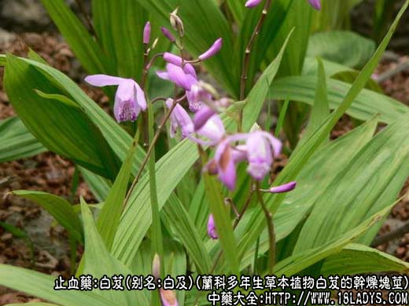
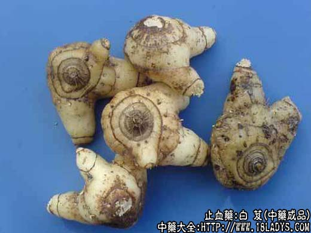
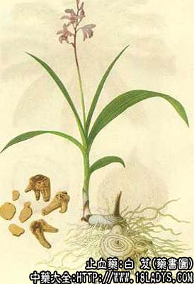

本品为较常用中药。始载《神农本草经》。
别名：白及。李时珍说：其根白色，连及而生，故名白及。
来源：为兰科多年生草本植物白芨的干燥块茎。野生。
产地：主产于贵州、四川、湖南、湖北等省，此外浙江、河南、陕西、广东、广西、云南、江苏、福建、江西等地亦有生产。
性状鉴别：块茎扁圆形。有2～3个分叉，略似掌状，长1.5～4.5厘米，厚0.5～1.5厘米，分叉扁圆锥形。表面黄白色，有细密纵皱纹，上面有微凸起的茎痕，周围有较紧密的环纹2～3圈。和点状细根痕，下面有连接另一块茎的断裂残基，周围有稀疏环纹1～2圈，分叉上亦有稀疏环节纹1～3圈，环纹呈棕色或褐色。质坚硬，不易折断。断面角质样，黄白色半透明，并有散在的细椎管束小店。气无，味微苦。嚼之产生粘液。
以根茎个大坚实，色白明亮，光洁者为佳。
主要成分：含白芨胶（为粘胶质）和挥发油。
功效与作用：1、止血，有良好的局部止血作用，据初步观察，其原理为使血细胞凝集，形成人工血栓。白芨末的止血效果迅速确实，优于紫珠草、大小蓟等。
2、抗菌，体外试验对大型结核杆菌有显著抑制作用，也能抑制革兰氏阳性菌。
3、抗真菌，水浸剂在试管内对奥杜盎氏小芽胞癣菌有抑制作用。
炮制：切片，生用。
性味：辛、苦、微寒。
归经：入肺、胃、肾经。
功能：化瘀止血，补肺生肌。
主治：咳血、吐血、衄血，外敷痈肿，烫伤，皮肤燥裂。
临床应用：1、治肺、胃出血，白芨较常用。配枇杷叶、阿胶珠等治肺出血。例如白芨枇杷丸即为治疗肺痨咯血的有名方剂，凡阴虚有热的咳嗽咯血均可用。治胃溃疡出血，常配乌贼骨，或配陈棕炭、当归炭、阿胶、白芍等，方如溃疡出血汤。
2、外用止血。以白芨纱布或用粉剂覆盖创面，不仅对皮肤损伤的止血有效，且在手术时对肝、肾静脉出血的止血也可靠，止血效能较明胶海绵或淀粉海绵更好。单纯外伤出血，可用白芨末配五倍子末撒敷患处。
3、治肺结核。历代医家用白芨治疗肺痨的不乏其人，有的还称誉白芨有“补肺”作用，但实际上，白芨在肺结核病的治疗上主要仍在合并有咯血时用。现代应用白芨治疗浸润型肺结核或空洞型肺结核虽不少，但多配其他药用，有的配雷米封（效果比单用白芨或单用雷米封好），有的配大蒜粥（有一定效果，但副作用较多）.按中医传统经验，则多配其他滋阴益气药，如龟板、牡蛎、山甲、阿胶、党参、黄芪等，这样的配伍起到滋养、强壮、补充钙质和抑菌的作用，对促进结核病变消散或纤维化、钙化有一定作用，这也许就是所谓“补肺”的原理所在，但白芨究竟在其中能起到多大作用，这问题还有待进一步的研究。
4、治支气管扩张，有咳嗽和痰常带血者，可以单用（白芨粉每次3g，每日3次），但最好配百合、麦冬、阿胶、三七等养阴药和止血药同用。
外用方面，白芨还可以治疮疡（与皂角共研细末，水调敷，或以蜂蜜调敷），治肛裂（以白芨和石膏粉治成软膏局部涂敷），治皮肤皲裂（白芨粉用麻油调匀外擦），都有一定效果。
用量：粉剂3～9g，入煎剂6～18g，大剂可用至27～30g，外用适量。
处方举例：1、白芨枇杷丸：白芨30g，枇杷叶（去毛蜜炙）15g，藕节15g，阿胶珠（蛤粉炒）15g，共为细末，以生地浓煎取汁泛丸，每次3g含化，治咳嗽咳血、肺损阴虚。
2、溃疡出血汤：白芨12g，白芍9g，陈棕炭9g，当归炭9g，阿胶9g（溶化），党参9g，黄芪12g，水煎服。
注：白芨有抗结核菌的作用，配合雷米封治疗肺结核效果较好。配乌贼骨可治疗消化系统溃疡出血。